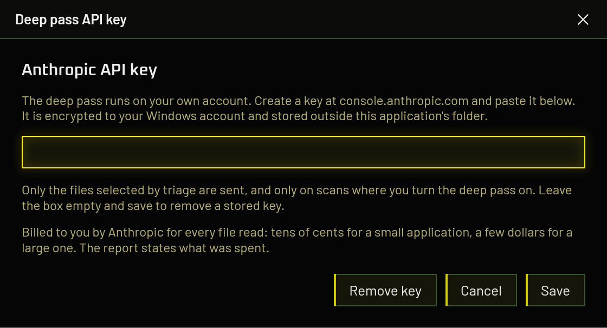
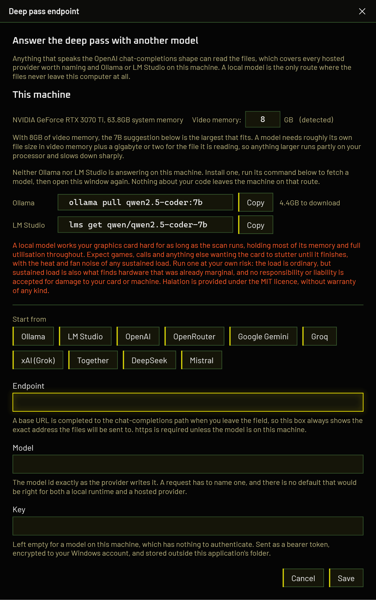

Which route to pick
| Route | What it costs | Where your files go | Setup |
|---|---|---|---|
| Claude Code | Nothing extra. Spends your existing subscription allowance. | Anthropic | None, if you are already signed in |
| Anthropic API key | Cents on a small project, a few dollars on a large one. Billed to prepaid credit | Anthropic | Paste a key |
| Hosted endpoint | Whatever that provider charges | That provider | URL, model id, key |
| Local model | Nothing, ever | Nowhere. Stays on your machine. | Install a runtime, pull a model |
If you have a Claude subscription, use it: it is the best model of the four routes and it costs nothing on top of what you already pay. If privacy matters more than answer quality, run a model locally. The hosted endpoints exist so that neither of those being unavailable means going without.
The deep pass is offered when you are reading a report as the person who built the application. Checking something you downloaded runs entirely on your machine, with no account, no key and nothing leaving it. Why, in detail.
Turning it on for a scan
Whichever route you configure, the deep pass is a tick box on the window that appears after you choose an application and before the scan starts. It is off every time. Nothing is sent anywhere until you tick it for that particular scan.

A route that is not configured is shown but cannot be selected, and says what is missing rather than being quietly absent.
Route 1 · The Claude Code you already have
Nothing to configure. VibeCheck looks for Claude Code when it starts, including the copy bundled inside the Claude desktop app, and asks it whether it is signed in. Claude Code does not need to be running.
- Install Claude Code, or the Claude desktop app, which carries a copy.
- Sign in to it once, in its own interface.
- Start VibeCheck. The route reports itself ready, and names the installation it found.
If it is installed but signed out, a Sign in button appears and opens Claude Code's own sign-in flow. VibeCheck never sees your credentials; the CLI holds them, exactly as it does when you use it directly.
Sign in to Claude Code while VibeCheck is already open and it will not notice until you press Sign in or restart it.
What it costs
This spends the usage allowance of the subscription you already pay for, and nothing is charged on top. A deep pass is a handful of requests, so on a Pro or Max plan it is a small share of a day's allowance. It does come out of the same pot as your own work with Claude, though, and a large application read at the file ceiling will make a dent in it. The report says which installation answered and states plainly that no money was charged.
Why this route is fenced in
Claude Code is an agent with shell and filesystem access, where an API endpoint cannot execute anything. So where it is used it gets no tools, safe mode, an empty working directory, no session persistence, and the file content arrives on standard input rather than on a command line other processes can read.
Route 2 · An Anthropic API key
- Create a key at the Anthropic Console.
- Buy some credit. The API is prepaid and separate from a Claude subscription.
- In VibeCheck, press Set key on the drop screen and paste it.

The API is billed per token against credit you buy up front. It is a separate product from a Claude subscription, with separate billing and no bridge between the two, so a Pro or Max plan does not cover it and its allowance is not touched.
What it costs depends on how much code there is, and the range is wide. A dozen small files runs to a few cents. A large application that reaches the ceiling of forty files, each up to sixty thousand characters, is a different order of magnitude: at Claude Opus 5's published rates of US$5 per million input tokens and US$25 per million output, that worst case lands somewhere around four to five dollars for a single scan. Cost scales with the bytes sent, so treat the small-project figure as the floor rather than the typical case.
The report prints the estimate alongside the token counts it is based on, so you can see what a scan cost rather than find out at the end of the month. The forty-file ceiling exists to stop a large application running away with your credit; it is a limit, not a target, and most scans land nowhere near it.
Your key is encrypted to your Windows account and stored outside the application folder. It is never written to a report, and the interface only ever shows it masked.
Route 3 · Any OpenAI-compatible endpoint
Anything that speaks the OpenAI chat-completions shape can answer the deep pass, which covers every hosted provider worth naming plus Ollama and LM Studio on your own machine. Press Configure on the drop screen.

The window is three things stacked: what it knows about your machine, a preset to start from, and the three fields that make the request.
- Endpoint. A base URL is completed to the chat-completions path when you leave the field, so the box always shows the exact address your files will be sent to. Every provider documents a different base URL and none of them is the one the request goes to, which would otherwise be a 404 on the first file of your scan. HTTPS is required unless the model is on this machine.
- Model. The model id exactly as the provider writes it. A request has to name one, and there is no default that would be right for both a local runtime and a hosted provider.
- Key. Left empty for a model on your machine, which has nothing to authenticate. Sent as a bearer token, encrypted to your Windows account, stored outside the application's folder.
Telling it about your graphics card
The difference between a local deep pass that takes twenty minutes and one that takes three hours is entirely whether the model fitted in video memory. That is not something you should have to find out by running a scan overnight, so the window works it out first.
It names the card it detected and how much system memory the machine has, and puts the video memory figure in an editable box. Correct it if the detection is wrong, which happens on laptops with two graphics chips, where the integrated one is often reported first. The label beside the box says whether the number came from detection or from you, and the advice below re-reads as you type.
A model needs roughly its own file size in video memory, plus a gigabyte or two for the file it is reading. Anything larger runs partly on your processor and slows down sharply. That arithmetic is the real answer, so you can size a model that is not in the list below rather than being limited to these three.
A machine with no graphics card is not refused. System memory is what a model runs in then, and the advice says so.
Which local model
One family across every size on purpose. Comparing scans is hard enough without the smallest and largest suggestions being different models that disagree for reasons of their own, and moving up a size should get you more of the same judgment rather than a different one.
| Model | Wants | Download | What you get |
|---|---|---|---|
qwen2.5-coder:7b |
6.5 GB video memory | 4.4 GB | The usual choice for an 8 GB card. Enough to reason about a file properly without spilling onto the processor. |
qwen2.5-coder:14b |
11 GB video memory | 8.4 GB | Better at reachability, and at guards that are incomplete rather than absent. Wants a 12 GB card or more. |
qwen2.5-coder:32b |
22 GB video memory | 18.5 GB | The closest a model on your own machine gets to the hosted route. Wants 24 GB. |
Ollama writes qwen2.5-coder:7b and LM Studio writes
qwen/qwen2.5-coder-7b, and neither accepts the other's spelling. VibeCheck
gives you the command for whichever runtime is answering, and both when neither is, so
you should not have to translate between them.
It matters in the Model field too: paste an Ollama tag into a configuration pointing at LM Studio and the request fails on a model that does not exist. Picking a detected model from the list avoids the question entirely, because that fills in the endpoint and the identifier together.
It says so rather than suggesting something smaller, and that is deliberate. Pointed at
one real application's source, qwen2.5-coder:1.5b read all eighteen
qualifying files, answered every request in under a second and a half, and returned
nothing at all: no findings, no error, no limitation. 7B over the same
code returned twenty-two points to look at.
A silent all-clear from a model that cannot do the job is the worst failure this tool has, because the report is indistinguishable from one that genuinely found nothing. Suggesting a size that produces one is worse than suggesting none.
3B is not a smaller replacement either. It is the one size in this family published under a research licence rather than Apache 2.0, and pointing somebody scanning their commercial application at it is an avoidable trap.
If you already have models installed, the window lists them with a verdict against your card (comfortable, tight, or spills onto the processor) and sorts code-trained models above general chat ones.
Ollama serves them through the same localhost:11434 as local ones: the
daemon sees the -cloud suffix, attaches your ollama.com credentials, and
forwards the request. A loopback address is not proof that anything stayed on your
machine, so VibeCheck reads the suffix and says so rather than claiming nothing was
uploaded while your source code was.
This is not a quiet background task. The model occupies most of your video memory for the whole pass and holds the card at full utilisation while it reads. Measured on the machine these figures come from, a 7B model on an 8 GB card sat at 7.7 GB of 8 GB and 100% utilisation for the duration of the scan. Expect games, video calls, editing and anything else that wants the card to stutter or slow down until it finishes, along with the fan noise, heat and power draw that go with any sustained load. A large application takes minutes on a card the model fits, and hours on one it does not.
Run a local model at your own risk. The load is ordinary, no different in kind from a demanding game or a long render, but sustained load is also what finds hardware that was already marginal: failing cooling, an unstable overclock, a dying fan, a power supply with nothing left in reserve. Kailoren and VibeCheck accept no responsibility or liability of any kind for damage to your graphics card or to any other part of your machine, however it arises from running a local model. The software is provided under the MIT licence, without warranty of any kind, express or implied.
If that is not a trade you want to make, nothing is lost. The Claude Code route and the hosted providers do not touch your card at all, and the ordinary scan, which is the part that produces the score, never did.
Setting up Ollama
- Install Ollama. It runs as a background service on
localhost:11434. - Pull a model. VibeCheck shows the exact command for the size that fits your card, with a copy button:
ollama pull qwen2.5-coder:7b - In the endpoint window, press the Ollama preset. It fills in
http://localhost:11434/v1/chat/completionsand leaves the key empty. - Put the model tag in the Model field, exactly as you pulled it.
- Save.
The deep pass sends whole files, up to sixty thousand characters each. Ollama's default context is far shorter than that, and a model that silently truncates its input answers about a fragment of your file while appearing to have read all of it. Set:
OLLAMA_CONTEXT_LENGTH=32768as a system environment variable and restart Ollama. VibeCheck compares the reported prompt tokens against the characters it sent and reports a mismatch, so a truncated read is caught rather than trusted. Better not to have one at all, though.
Setting up LM Studio
- Install LM Studio.
- Open it once. This step is not optional and is easy to skip on a headless setup: LM Studio creates its working folder on first launch, and until it has, its own command line tool refuses to do anything at all, reporting "no valid installation could be found" even though the application is plainly installed.
-
Download a model. For an 8 GB card, a 7B coder model. Either through its interface, or
with the command VibeCheck gives you:
lms get qwen/qwen2.5-coder-7b - Open the Developer tab and start the local server. It listens on
localhost:1234. - Copy the model id exactly as LM Studio lists it. It is usually longer than an Ollama tag and is not interchangeable with one.
- In the endpoint window, press the LM Studio preset, paste the model id, leave the key empty, and save.
Check the context length LM Studio loaded the model with, for the same reason as above. It is set per model when the model is loaded, rather than globally.
Hosted providers
Ten presets fill in the endpoint for you. You still supply the model id and the key, because both change more often than a release of this application does.
| Preset | Key | Notes |
|---|---|---|
| Ollama | Not needed | On this machine. Nothing uploaded, nothing charged. |
| LM Studio | Not needed | On this machine. Start its local server first. |
| OpenAI | Required | Keys and current model ids at platform.openai.com. |
| OpenRouter | Required | Many models behind one key. Ids look like vendor/model. |
| Google Gemini | Required | Google's own OpenAI-compatible endpoint, not the Gemini API shape. |
| Groq | Required | Open-weight models, quickly. Ids at console.groq.com. Not xAI, despite the name. |
| xAI (Grok) | Required | Grok, from xAI. A different company to Groq above. Keys and ids at console.x.ai. |
| Together | Required | Open-weight models. Ids look like vendor/model. |
| DeepSeek | Required | Keys at platform.deepseek.com. |
| Mistral | Required | Keys and model ids at console.mistral.ai. |
Anything else that speaks the same shape works too. Type its URL in; the preset buttons are a convenience, not a list of what is allowed.
The deep pass asks a model to reason about whether a guard is complete and whether untrusted input reaches a dangerous call. A small general-purpose chat model will answer confidently and badly. Prefer the largest code-capable model your budget allows, and treat the local model warning above as applying to hosted models of similar size.
What actually gets sent
The files that handle input the application does not control, plus any file that calls into one a rule flagged. Not the whole application, and not only the lines a rule matched. Both bounds are deliberate:
- Sending only flagged lines would mean the pass could deepen findings you already have and never discover one in code no rule happened to hit. Tested against a real application, the two issues the pattern rules missed were both in files with zero findings.
- Reading one hop of callers is what makes reachability answerable. The same application had an unbounded stack allocation recorded as a local-only crash risk; it was reachable from a remote HTTP response, and the file that proved it was one call away.
At most 40 files per scan, whichever route answers, so neither your allowance nor your credit can run away on one large application. The report lists exactly which files were read, what answered, and what the pass cost.
Why downloads do not get a deep pass
For the API and endpoint routes that is a decision about what the window offers. For the Claude Code route it is a refusal enforced in the core, and the reason is worth stating: feeding source recovered from software you do not trust into an agent that can act on your machine is the attack this tool exists to warn people about. The scanned program never has to run, because getting VibeCheck to read it becomes the attack instead.
Point it at your source, not your release build
The AI pass reasons about intent, and decompiling a binary destroys every comment in it. On a real application whose source was to hand, three findings from a frontier model against the decompiled release were checked line by line and all three were wrong, each one answered by a comment the author had already written and the decompiler had thrown away.
The deterministic checks are unaffected, since a pattern does not care about comments. So the pattern half gives the same answer either way; the AI half is a much better instrument when the reasoning is still in the file.
When it does not work
Everything returns nothing, with no error
Almost always a model too small for the job. See the warning above: a model that cannot do this answers instantly and returns an empty list, which reads exactly like a clean result. Try a larger one before concluding your code is fine.
404 on the first file
The endpoint is a base URL rather than the chat-completions path. Leave the field and let
VibeCheck complete it, then check the box shows the full address. OpenRouter is the common
trap: its path really is /api/v1 and not /v1.
401 or 403
The key is missing, wrong, or has no credit against it. Local runtimes need no key at all; if you pasted one for Ollama or LM Studio, clear it.
The model answers about only part of a file
The context length is too short and the input is being truncated. Raise it, as under Ollama above. VibeCheck reports the mismatch when it can detect one.
Claude Code is installed but not detected
The check runs at startup only. Press Sign in, or restart VibeCheck. If it is installed and signed in and still not found, that is worth an issue with the way you installed it.
A scan disagrees with the last one
Expected, and it is why the deep pass cannot move the score. Models are not deterministic, and two runs over identical code can return different suggestions. The number beside them comes from the pattern and dependency checks alone, so that part does not move.